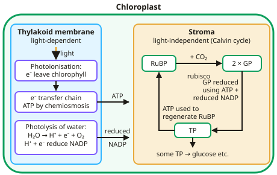

A-level Biology Year 13 · Topic 5
Energy transfers in and between organisms
Energy transfers in and between organisms follows energy from sunlight, into the bonds of glucose, and through every living thing in an ecosystem.
We will go step by step through photosynthesis and respiration at the level of molecules and membranes, then look at how energy moves through food chains and how nitrogen and phosphorus are recycled.
You will also meet respiratory quotients and the practicals on pigment chromatography, photosynthesis rate and dehydrogenase activity.
- 8 subtopics
- 271 questions
- Free: 5.1 notes and 10 questions
In this topic
- 5.1PhotosynthesisFree below · 44 questions
- 5.2RespirationOpen in Full Marks · 31 questions
- 5.3Energy and ecosystemsOpen in Full Marks · 65 questions
- 5.4Nutrient cyclesOpen in Full Marks · 30 questions
- 5.5Respiratory substrates and the respiratory quotientOpen in Full Marks · 25 questions
- 5.6Practical: chromatography of photosynthetic pigments (Rf values)Open in Full Marks · 15 questions
- 5.7Practical: rate of photosynthesis and dehydrogenase activity in chloroplastsOpen in Full Marks · 43 questions
- 5.8Practical: the rate of respiration in yeast (required practical 9)Open in Full Marks · 18 questions
5.1 · Free notes
Photosynthesis

Key points
- Photosynthesis happens in chloroplasts. The light-dependent reaction takes place on the thylakoid membranes; the light-independent reaction takes place in the stroma.
- Light-dependent reaction: light energy excites electrons in chlorophyll (photoionisation). The electrons pass along an electron transfer chain, releasing energy used to make ATP by chemiosmosis.
- Photolysis of water produces protons, electrons and oxygen. Protons and electrons reduce NADP.
- Light-independent reaction (Calvin cycle): CO₂ reacts with RuBP, catalysed by rubisco, forming two molecules of GP. GP is reduced to triose phosphate (TP) using ATP and reduced NADP.
- Some TP is converted into useful organic substances such as glucose; most is used to regenerate RuBP, which also uses ATP.
- Limiting factors are light intensity, CO₂ concentration and temperature. Growers raise these in glasshouses to increase yield, as long as the extra cost is less than the extra profit.
- Required practical: pigments can be separated by chromatography. Rf = distance moved by spot ÷ distance moved by solvent front.
In more detail
- Chemiosmosis in the chloroplast: electrons pass along the electron transfer chain in the thylakoid membrane, releasing energy that pumps H⁺ into the thylakoid space; H⁺ flows back through ATP synthase, making ATP.
- Calvin cycle numbers: 6 turns fix 6 CO₂ to make one hexose; each turn uses 3 ATP and 2 reduced NADP. RuBP + CO₂ → 2 GP → (ATP, NADPH) → 2 TP.
- Rubisco's problem: it can also react with O₂ (photorespiration), which wastes energy, especially at high temperature and low CO₂.
- Worked limiting-factor reading: if increasing light intensity no longer raises the rate but adding CO₂ does, CO₂ concentration was the limiting factor at that light level.
Practice
Photosynthesis: 10 questions
Pick an answer to check it, or open the answer for the explanation.
1. Where does the light-independent reaction take place?
- Thylakoid membranes
- Stroma
- Cytoplasm
- Intermembrane space
Show answer
B: Stroma. The Calvin cycle enzymes, including rubisco, are in the stroma of the chloroplast.
2. Which enzyme catalyses the reaction between CO₂ and RuBP?
- ATP synthase
- Rubisco
- DNA polymerase
- Hexokinase
Show answer
B: Rubisco. Rubisco fixes carbon dioxide by combining it with RuBP to form two GP.
3. What are the products of photolysis?
- Glucose and oxygen
- Protons, electrons and oxygen
- ATP and reduced NADP
- CO₂ and water
Show answer
B: Protons, electrons and oxygen. Water is split by light energy into protons (H⁺), electrons and oxygen.
4. Which products of the light-dependent reaction are used in the Calvin cycle?
- Oxygen and ATP
- ATP and reduced NADP
- Glucose and NADP
- Water and CO₂
Show answer
B: ATP and reduced NADP. ATP and reduced NADP are needed to reduce GP to TP and to regenerate RuBP.
5. A plant is moved into darkness. What happens straight away to the concentrations of GP and RuBP?
- GP rises, RuBP falls
- GP falls, RuBP rises
- Both rise
- Both fall
Show answer
A: GP rises, RuBP falls. Without ATP and reduced NADP, GP cannot be reduced and RuBP cannot be regenerated, but RuBP is still being converted to GP.
6. A pigment spot moves 3.2 cm when the solvent front moves 8.0 cm. What is its Rf value?
- 0.25
- 0.40
- 2.5
- 4.8
Show answer
B: 0.40. Rf = 3.2 ÷ 8.0 = 0.40.
7. Why is the energy from electrons in the transfer chain important?
- It splits CO₂
- It is used to pump protons, allowing ATP synthesis
- It breaks down glucose
- It fixes nitrogen
Show answer
B: It is used to pump protons, allowing ATP synthesis. Energy released pumps protons across the thylakoid membrane; they flow back through ATP synthase, making ATP (chemiosmosis).
8. Which molecule directly accepts electrons and protons from photolysis?
- ATP
- NADP
- RuBP
- Glucose
Show answer
B: NADP. Reduced NADP is then used in the light-independent reaction.
9. What would happen to GP concentration if CO₂ supply were removed but light continued?
- GP would increase
- GP would decrease, as no new GP is fixed from CO₂
- GP would stay the same
- GP would become RuBP
Show answer
B: GP would decrease, as no new GP is fixed from CO₂. RuBP would build up instead since it is not being converted to GP.
10. Which process uses protons flowing through ATP synthase to make ATP on the thylakoid membrane?
- Substrate-level phosphorylation
- Photolysis
- Carbon fixation
- Chemiosmosis
Show answer
D: Chemiosmosis. Electron transfer pumps protons into the thylakoid space. They flow back through ATP synthase and drive ATP synthesis (chemiosmosis). Photolysis splits water and does not make ATP.
Keep going in Full Marks
Full Marks has 44 questions on Photosynthesis (34 more than here), set out in practice levels. You also get notes and 3D models for all 8 subtopics of Energy transfers in and between organisms, plus games, timed exams and past papers.
On your exam board
- AQATopic 5: Energy transfers in and between organisms
- OCR ATopic 5.2.1: Photosynthesis, Topic 5.2.2: Respiration, Topic 6.3.1: Ecosystems
- OCR BTopic 4.1: Energy for biological processes, Topic 4.2: Populations and ecosystems
- EdexcelTopic 5: Energy for biological processes, Topic 10: Ecosystems
- CambridgeTopic 12: Energy and respiration, Topic 13: Photosynthesis